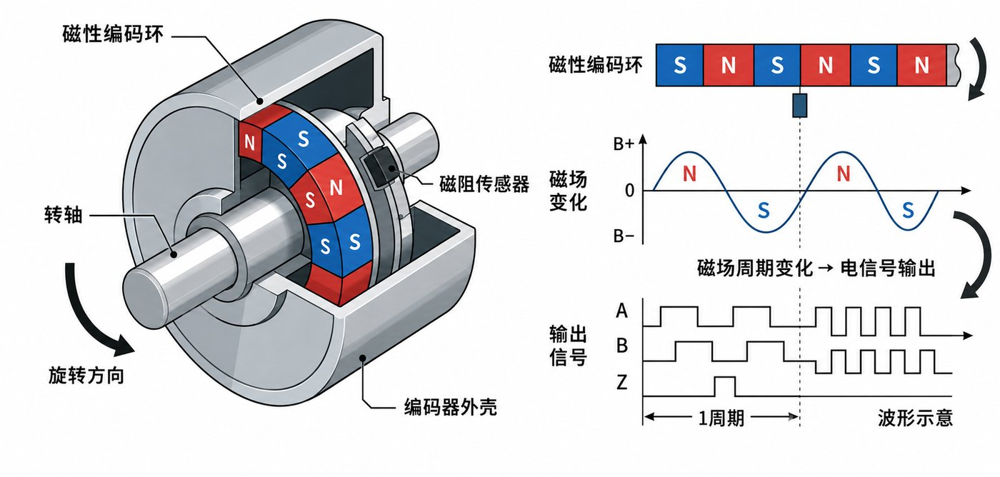

传感与控制 Sensing & Control
机构负责"怎么动"，这一页讲"怎么知道动到哪、怎么停在想要的地方"。 编码器（encoder）是闭环的"眼睛"——把角度变成可数的脉冲； PID 是闭环的"手"——发现偏差就往回拉。上一页说"数字控制详见传感与控制"，这一页把它拆到底。
增量编码器 · 正交解码（Quadrature Decoding）
上：旋转码盘——外圈 A 相刻线（绿）、内圈 B 相刻线（橙），空间错开 1/4 刻线周期 = 90° 电角度； 中：两相方波随码盘转动（示波器滚动模式）；下：4 倍频计数。点「反转」看波形与计数如何反应。
分辨率：4 倍频从哪来
1000 线 × 4 = 4000 计数/转 → 分辨率 = 360°/4000 = 0.09°/计数
为什么 ×4：A、B 两相每周期各产生 2 个边沿（上升+下降），共
4 个可数边沿/周期——每个边沿都计 1，分辨率就是刻线数的 4 倍。
演示码盘只有 8 条刻线（看得清），所以 8×4 = 32 计数/转、11.25°/计数。
增量式 vs 绝对式：增量式（incremental）断电即失位——它只记"走了多少"，不记"现在在哪"， 上电必须先回零（Z 相 index 脉冲每转 1 个，专干这个）； 绝对式（absolute，如磁编码器 AS5600）每个角度对应唯一编码，断电位置保持，上电即知。
增量式 vs 绝对式：增量式（incremental）断电即失位——它只记"走了多少"，不记"现在在哪"， 上电必须先回零（Z 相 index 脉冲每转 1 个，专干这个）； 绝对式（absolute，如磁编码器 AS5600）每个角度对应唯一编码，断电位置保持，上电即知。
正交解码给你什么
- 方向：A 超前 B = 正转；B 超前 A = 反转
- 位置：计数值 × 分辨率 = 角度
- 速度：单位时间计数变化 = 角速度（不用额外传感器）
- 两相互为校验：单相卡死立刻能发现
增量式的坑
- 断电失位，上电必须回零（撞限位开关或找 Z 相）
- 电气干扰丢一个边沿，误差就永久累积
- 转速太快时边沿间隔小于采样周期 → 计数溢出混叠
竞赛用法
- 轮子里程计：4 倍频计数 ÷ (减速比×线数×4) = 走过的角度
- Z 相 + 限位开关：上电标零，消除累积漂移
- 现成解码库遍地都是（见下方制造卡），别手写中断轮询
机械设计
- 编码器是闭环的"眼睛"：它放在减速箱哪一级，测的就是哪一级的真实位置
- 线数（CPR）选择 = 分辨率 vs 算力：轮速高时线数太高，单片机数不过来
- 测轮请装在电机轴（减速前）——同样线数分辨率放大减速比倍
机械制造
- 磁编码器（AS5600 类）：芯片固定 + 轴端径向磁铁，免接触不怕灰——农业场景友好
- AB 相输出成品编码器：花钱买精度，接线即用
- 自制磁编码器注意磁铁同心度 < 0.5 mm，偏心 = 周期性误差
